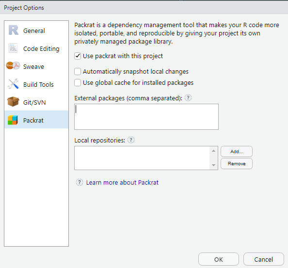
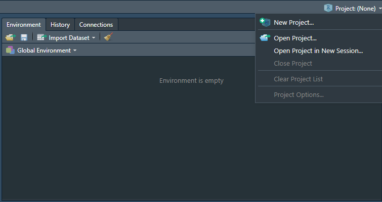

Chapitre 1 Bien commencer
1.1 Créer un projet sous Rstudio pour vous permettre de recencer vos travaux.
Pourquoi travailler avec les projets Rstudio plutôt que les scripts R ?
- Cela permet la portabilité : le répertoire de travail par défaut d’un projet est le répertoire où est ce projet. Si vous transmettez celui-ci à un collègue, le fait de lancer un programme ne dépend pas de l’arborescence de votre machine.
Fini les
setwd("chemin/qui/marche/uniquement/sur/mon/poste")!
- Toujours sur la portabilité, un projet peut être utiliser avec un package comme
packratourenvqui vont vous permettre d’internaliser au sein du projet l’ensemble des packages dont vous aurez besoin dans votre projet dans la version avec laquelle vous l’avez utilisé. Cela permet donc à votre collègue à qui vous passer votre projet de ne pas avoir à les installer dans la même version, et si vous mettez à jour votre environnement R, votre projet restera toujours avec les versions des packages avec lesquelles vous avez fait tourné votre projet à l’époque. Cela évite d’avoir à subir les effets d’une mise à jour important d’un package qui casserait votre code.
Packrat est intégré à Rstudio. pour activer packrat sur un projet, aller dans Tools/Project Options->Packrat

renv est plus récent que Packrat, il n’est pas encore intégré à Rstudio mais apporte des améliorations subsentielles par rapport à son prédécesseur.
En savoir plus sur renv
Cela permet de se forcer à travailler en mode projet : on intègre à un seul endroit tous ce qui est lié à un projet : données brutes, données retravaillées, scripts, illustrations, documentations, publications… et donc y compris packages avec
packratourenv.On peut travailler sur plusieurs projets en même temps, Rstudio ouvre autant de sessions que de projets dans ce cas.
Les projets Rstudio intègrent une interface avec les outils de gestion de version
gitetsvn.Cela veut dire que vous pouvez versionniser votre projet et l’héberger simplement comme répertoire sur des plateformes de gestion de code telle quegithubougitlab.
Pour créer un projet :
Cliquez sur Project en haut à droite puis New Project. 
Cliquez sur New Directory.

1.2 Désactiver les options de sauvegarde automatique de Rstudio
Votre code doit être reproductible depuis vos données en entrée vers votre résultat. Pour cela, il est fortement déconseillé de sauvegarder quoique ce soit dans le fichier .RData de sauvegarde par défaut.
Pour cela, aller dans Tools->Global Options… et ensuite conformez vous à ceci
1.3 Intégrer vos données
Une bonne pratique est de créer un sous répertoire /extdata pour stocker les données sur lesquelles vous aurez à travailler et un dossier /data pour stocker les données après préparation.
Vous pouvez le faire de l’explorateur de fichier de votre système d’exploitation ou directement à partir de l’explorateur de fichier de RStudio.
Si par la suite vous souhaitez avoir des exemples de bonnes pratiques sur comment structurer vos données, vous pouvez vous référer au chapitre data du livre d’Hadley Wickham sur la construction de package R (tout package R étant aussi un projet !)
1.4 Créer votre arborescence de projet
Créer un répertoire
/srcou vous mettrez vos scripts R.Créer un répertoire
/figuresou vous mettrez vos illustrations issues de R.
1.5 Activer les packages nécessaires
Commencer par rajouter un script dans le répertoire /src à votre projet qui commencera par :
activer l’ensemble des packages nécessaires
charger les données dont vous aurez besoins.
1.6 Bien structurer ses projets data
Plusieurs documents peuvent vous inspirer sur la structuration de vos projets data par la suite.
En voici quelques uns :
- https://github.com/pavopax/new-project-template
- https://nicercode.github.io/blog/2013-04-05-projects/
- https://www.inwt-statistics.com/read-blog/a-meaningful-file-structure-for-r-projects.html
- http://projecttemplate.net/architecture.html
A partir du moment où quelques grands principes sont respectés (un répertoire pour les données brutes en lecture seule par exemple), le reste est surtout une question d’attirance plus forte pour l’une ou l’autre solution. L’important est de vous tenir ensuite à garder toujours la même structure dans vos projets afin de vous y retrouver plus simplement.